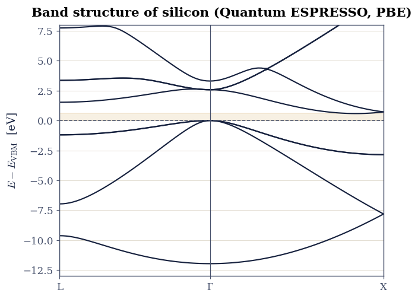
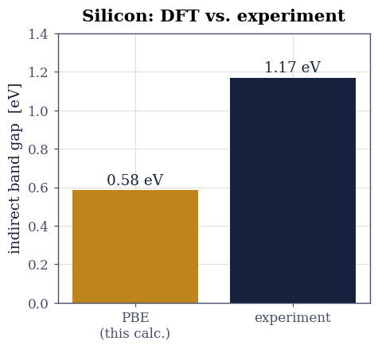

4.1 The Electronic Band Structure of Silicon#
from ecp.style import header, use_style
use_style()
header(
volume="Volume IV — Electronic Structure",
number="4.1",
title="The Electronic Band Structure of Silicon",
blurb="From a real Quantum ESPRESSO calculation: Bloch states and the "
"Brillouin zone, the band structure of silicon along L–Γ–X, its indirect gap, "
"and the famous failure of density-functional theory to get that gap right.",
difficulty="intermediate",
estimate="75–105 min",
source="FS 2023 · Lecture 5 (band theory of crystals)",
)
Notebook overview#
Why does silicon carry current the way it does, absorb the light it does, and sit at the heart of every chip? The answer is its band structure: the map of allowed electron energies as a function of crystal momentum. In a periodic solid the electronic states organise into bands, and the gap between the filled and empty ones decides whether a material is a metal, a semiconductor, or an insulator. Computing that map is the central task of electronic-structure theory.
This is the band-theory exercise of Lecture 5, and unlike the earlier volumes it is code-essential: density-functional theory cannot be reimplemented in a notebook, and the real skill is running the calculation and reading its output. So we work with the genuine article. We show the Quantum ESPRESSO input deck the course used for silicon, parse the real committed output of that density-functional calculation, plot the band structure along the high-symmetry path L–Γ–X, and read off the indirect gap. Then we confront the result with experiment, and meet the most famous systematic error in the field: the density-functional band-gap problem.
Provenance. This notebook develops Lecture 5 of the course (band theory of crystals). The band structure here is parsed from the real output of the course’s Quantum ESPRESSO calculation of silicon (the committed
exercise-5/TASK_3/done/SI.xml), and the input is the course’s ownscf.in. No part of the electronic structure is recomputed or invented; we read and analyse the actual DFT result. The full course credit is in the footer.
Reading a validation. Each exercise closes with a check against an independent fact: an electron count, the known position of silicon’s band extrema, the measured gap. A ✗ flags a mismatch to track down, not a verdict; a ✓ is strong evidence, not proof.
Theory in brief#
Bloch’s theorem and bands#
In a crystal the potential is periodic, \(V(\mathbf r+\mathbf R)=V(\mathbf r)\) for every lattice vector \(\mathbf R\). Bloch’s theorem then says the electronic eigenstates can be labelled by a crystal momentum \(\mathbf k\) and a band index \(n\), and take the form
with energies \(E_n(\mathbf k)\). Because \(\mathbf k\) and \(\mathbf k+\mathbf G\) (for a reciprocal-lattice vector \(\mathbf G\)) give the same state, every distinct \(\mathbf k\) lives in one Brillouin zone. The function \(E_n(\mathbf k)\), plotted along straight lines between the high-symmetry points of that zone, is the band structure. For the face-centred-cubic lattice of silicon those points include \(\Gamma\) (the zone centre), \(X\) (a face centre), and \(L\) (a corner).
Filling, gaps, and silicon#
Each band holds two electrons per unit cell (spin up and down) at each \(\mathbf k\). A material with exactly enough electrons to fill some bands completely, leaving the rest empty, has a band gap between the highest filled state (the valence-band maximum, VBM) and the lowest empty one (the conduction-band minimum, CBM), and is a semiconductor or insulator; a material with a partly filled band is a metal. Silicon crystallises in the diamond structure (an fcc lattice with a two-atom basis) and contributes \(4\times2=8\) valence electrons per cell, so four bands fill and a gap opens above them.
The gap is indirect: the VBM and the CBM sit at different crystal momenta, so promoting an electron across it requires a change in \(\mathbf k\) (supplied by a phonon), which is why silicon is a poor light emitter. The smallest direct gap, at \(\Gamma\), is much larger.
Density-functional theory, and what it gets wrong#
The calculation solves the Kohn-Sham equations of density-functional theory (DFT): a set of effective single-particle equations whose density reproduces the interacting electron density. Quantum ESPRESSO expands the Kohn-Sham orbitals in plane waves and uses pseudopotentials for the core electrons. DFT is remarkably good for ground-state energies and structures, but the Kohn-Sham eigenvalue gap systematically underestimates the true gap, often by a factor of two: the band-gap problem, a consequence of the missing derivative discontinuity in approximate exchange-correlation functionals [PL83]. We will see it directly.
Setup#
import os
import xml.etree.ElementTree as ET
import numpy as np
import matplotlib.pyplot as plt
from ecp import validate
INK, AMBER, SOFT = "#16213e", "#c0851a", "#46506b"
HARTREE_EV = 27.211386 # QE writes energies in Hartree
def data_file(name):
"""Locate a shipped data file whether run from the repo root (CI) or the
notebook's own directory (Colab/Binder)."""
for base in ("data", os.path.join("notebooks", "04-electronic-structure", "data")):
path = os.path.join(base, name)
if os.path.exists(path):
return path
raise FileNotFoundError(name)
Exercise 1 — The crystal and the DFT calculation#
Every band structure begins with a ground-state (self-consistent-field)
calculation that finds the electron density and the Kohn-Sham potential. The
course’s Quantum ESPRESSO input for silicon fixes the crystal (an fcc lattice,
ibrav=2, with the diamond two-atom basis), the plane-wave cutoff (ecutwfc=40
Ry), the PBE pseudopotential, and a \(6\times6\times6\) k-mesh for the density:
&SYSTEM
ibrav = 2, celldm(1) = 10.26, ! fcc lattice, lattice parameter in bohr
nat = 2, ntyp = 1, ! two Si atoms per cell (diamond basis)
ecutwfc = 40.0, ecutrho = 300.0 ! plane-wave kinetic-energy cutoffs (Ry)
/
ATOMIC_SPECIES
Si 28.0855 Si.pbe-n-rrkjus_psl.1.0.0.UPF
ATOMIC_POSITIONS {alat}
Si 0.00 0.00 0.00
Si 0.25 0.25 0.25
K_POINTS automatic
6 6 6 1 1 1
A second run (calculation='bands') then evaluates the Kohn-Sham eigenvalues along
the path L–Γ–X, which is what we plot. The full SCF deck ships with this
notebook: si-scf.in.
Part a) Read the lattice parameter from the input. Part b) Confirm the crystal is the expected two-atom fcc cell.
Validation 1 — the silicon cell#
The deck must describe two silicon atoms in a cell with the known lattice constant
of silicon, \(a=5.43\,\)Å, i.e. celldm(1) \(\approx 10.26\,\)bohr.
validate.check(n_atoms == 2, "the cell holds two Si atoms (diamond basis)", f"nat = {n_atoms}")
validate.close(celldm * 0.529177, 5.43, "lattice constant matches silicon (5.43 Å)", rtol=2e-2)
✓ the cell holds two Si atoms (diamond basis) [nat = 2]
✓ lattice constant matches silicon (5.43 Å) [got 5.4306 vs expected 5.43 (rtol=0.02)]
True
Exercise 2 — Reading the real DFT output#
Quantum ESPRESSO writes its results to an XML file. The band-structure run stores, for every k-point on the path, the list of Kohn-Sham eigenvalues, along with the number of electrons and the Fermi energy. We parse that file directly: this is the actual output of the course’s calculation, not a recomputation.
Part a) Implement read_qe_bands to extract the k-points, eigenvalues (in eV),
Fermi energy, and electron count. Part b) Confirm the electron count implies
four filled bands.
Validation 2 — the parse is consistent with silicon#
The output must report eight valence electrons (so four filled bands), with at least one empty band above them, and a sensible number of k-points along the path.
validate.check(
n_elec == 8 and n_occ == 4 and n_bands > n_occ and n_kpts > 50,
"the DFT output describes silicon: 8 electrons, 4 filled bands",
f"{n_elec:.0f} electrons → {n_occ} filled bands; {n_bands} bands at {n_kpts} k-points",
)
✓ the DFT output describes silicon: 8 electrons, 4 filled bands [8 electrons → 4 filled bands; 8 bands at 100 k-points]
True
Exercise 3 — The band structure of silicon#
Now plot it. We build a one-dimensional coordinate that measures distance travelled along the L–Γ–X path, place a tick at each high-symmetry point, and draw every band \(E_n(\mathbf k)\) with energies referenced to the valence-band maximum (the conventional zero). Four bands sit below the gap, the rest above; the shape of those curves is the electronic structure of silicon.
Part a) Build the k-path distance and locate Γ. Part b) Plot all bands relative to the VBM, marking L, Γ, X.

Fig. 31 Electronic band structure of silicon from the course’s Quantum ESPRESSO (PBE) calculation, along the high-symmetry path L–Γ–X, with energies referenced to the valence-band maximum (VBM, dashed). The four filled valence bands lie below the shaded gap; the conduction bands above. The VBM sits at \(\Gamma\) (amber) and the conduction-band minimum (CBM, navy) lies along \(\Gamma\)–X, so the fundamental gap is indirect.#
Validation 3 — four valence bands below the gap#
At every k-point along the path the four valence bands must lie at or below the VBM (energy \(\le 0\)), the basic structure of a filled-shell semiconductor.
validate.check(
np.all(E[:, :n_occ] <= 1e-6),
"the four valence bands lie at or below the valence-band maximum everywhere",
f"max valence energy relative to VBM = {E[:, :n_occ].max():.3f} eV",
)
✓ the four valence bands lie at or below the valence-band maximum everywhere [max valence energy relative to VBM = 0.000 eV]
True
Exercise 4 — The indirect band gap#
Read the gap off the bands. The valence-band maximum is the highest point of the fourth band; the conduction-band minimum is the lowest point of the fifth. For silicon the VBM sits at \(\Gamma\) and the CBM lies about \(0.85\) of the way from \(\Gamma\) to X, so the two are at different crystal momenta and the gap is indirect. The smallest direct gap, both extrema taken at \(\Gamma\), is far larger, which confirms the indirect character.
Part a) Find the VBM, the CBM, and their k-points. Part b) Compute the indirect gap and the direct gap at \(\Gamma\).
VBM = 6.226 eV at Γ; CBM = 6.810 eV at ~0.83 of Γ→X
indirect gap = 0.584 eV; direct gap at Γ = 2.574 eV
Validation 4 — silicon’s indirect gap#
The PBE calculation must reproduce the qualitative band structure of silicon: a VBM at \(\Gamma\), a CBM away from \(\Gamma\) along \(\Gamma\)–X (so an indirect gap), and a much larger direct gap at \(\Gamma\). The indirect gap is the well-known PBE value of about \(0.6\,\)eV.
validate.check(vbm_at_gamma, "the valence-band maximum is at Γ", f"VBM index {i_vbm}, Γ index {gamma_idx}")
validate.check(
gap_direct_gamma > 1.5 * gap_indirect and 0.4 < cbm_frac < 1.0,
"the gap is indirect: CBM lies along Γ–X, direct gap at Γ is much larger",
f"direct@Γ {gap_direct_gamma:.2f} eV vs indirect {gap_indirect:.2f} eV; CBM at {cbm_frac:.2f} of Γ→X",
)
validate.close(gap_indirect, 0.6, "the PBE indirect gap is about 0.6 eV", atol=0.1)
✓ the valence-band maximum is at Γ [VBM index 45, Γ index 45]
✓ the gap is indirect: CBM lies along Γ–X, direct gap at Γ is much larger [direct@Γ 2.57 eV vs indirect 0.58 eV; CBM at 0.83 of Γ→X]
✓ the PBE indirect gap is about 0.6 eV [got 0.583652 vs expected 0.6 (rtol=1e-06)]
True
Exercise 5 — The band-gap problem#
Silicon’s measured band gap is \(1.17\,\)eV. The PBE calculation gives barely half of that. This is not a mistake in the run or a lack of convergence: it is the band-gap problem of density-functional theory. The Kohn-Sham eigenvalues are auxiliary quantities chosen to reproduce the density, not the energies to add or remove an electron, and approximate exchange-correlation functionals miss a derivative discontinuity that the true gap contains [PL83]. The upshot is a systematic underestimate, often near a factor of two, that more expensive methods (hybrid functionals, \(GW\)) are needed to repair.
Part a) Compare the computed gap to experiment. Part b) Confirm the underestimate.

Fig. 32 The density-functional band-gap problem for silicon: the PBE Kohn-Sham gap (amber) against the experimental value of 1.17 eV (navy). PBE recovers barely half the measured gap, a systematic underestimate rooted in the missing derivative discontinuity of approximate exchange-correlation functionals, not in the convergence of the calculation.#
Validation 5 — DFT underestimates the gap#
The computed gap must fall well short of the experimental \(1.17\,\)eV, the signature of the Kohn-Sham band-gap problem.
validate.check(
gap_indirect < 0.7 * gap_experiment,
"the PBE gap substantially underestimates the experimental value",
f"PBE {gap_indirect:.2f} eV vs experiment {gap_experiment:.2f} eV ({gap_indirect/gap_experiment*100:.0f}%)",
)
✓ the PBE gap substantially underestimates the experimental value [PBE 0.58 eV vs experiment 1.17 eV (50%)]
True
Going further#
Fixing the gap. Hybrid functionals (HSE) mix in exact exchange and roughly halve the error; the \(GW\) approximation computes the true quasiparticle gap and gets silicon within a tenth of an eV. Both cost far more than PBE.
The density of states. Integrate the bands over the whole Brillouin zone (not just the path) to get \(g(E)\), which is what optical and transport measurements actually probe.
Other crystals. The course also ran silicon carbide and a graphene nanoribbon; rerunning this analysis on them shows a wider gap (SiC) and the one-dimensional bands of the ribbon.
Effective masses. The curvature of the bands at the VBM and CBM, \(1/m^\* = \hbar^{-2}\,d^2E/dk^2\), sets the mobility of electrons and holes; fit a parabola near each extremum to extract it.
References#
Neil W. Ashcroft and N. David Mermin. Solid State Physics. Holt, Rinehart and Winston, 1976.
Paolo Giannozzi and others. Quantum espresso: a modular and open-source software project for quantum simulations of materials. Journal of Physics: Condensed Matter, 21(39):395502, 2009. doi:10.1088/0953-8984/21/39/395502.
Richard M. Martin. Electronic Structure: Basic Theory and Practical Methods. Cambridge University Press, 2 edition, 2020.
John P. Perdew, Kieron Burke, and Matthias Ernzerhof. Generalized gradient approximation made simple. Physical Review Letters, 77(18):3865–3868, 1996. doi:10.1103/PhysRevLett.77.3865.
John P. Perdew and Mel Levy. Physical content of the exact kohn-sham orbital energies: band gaps and derivative discontinuities. Physical Review Letters, 51(20):1884–1887, 1983. doi:10.1103/PhysRevLett.51.1884.
from ecp.style import footer
footer()